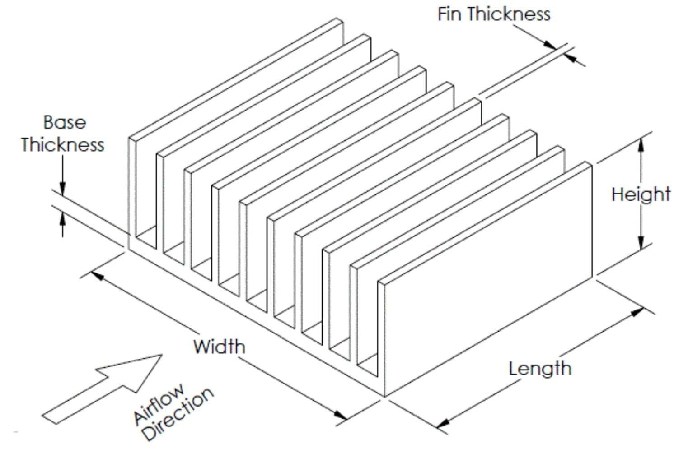

- Modeling and Simulation of Electrochemically Mediated Amine Regeneration
Dates: Jan 2021 – Sep 2022 - Conceptual design of a reverse osmosis plant
Dates: Jan 2021 – Feb 2021 - Design and fabrication of a small packed bed deaerator toward scale up
Dates: Nov 2019 – Sep 2020 - Simulation & CFD analysis of 2D-non reactive fluidized bed
Dates: Aug 2020 – Sep 2020 - Conceptual design of methanol (CH3OH) production unit
Dates: Oct 2018 – Jun 2019 - ANSYS Fluent Projects
■ Simulation of flow in a Convergent nozzle | ANSYS Fluent - COMSOL Multiphysics Projects
■ Simulation of Capillary flow in a microchannel | COMSOL Multiphysics
■ Under supervision of Dr. Moalei 's Homepage
■ Investigated the Electrochemically Mediated Amine Regeneration method as an alternative for amine recovery in amine-based absorption carbon capture.
■ Developed a two-dimensional dynamic model to investigate the system's behavior.
■ Used COMSOL Multiphysics software to simulate the Electrochemically Mediated Amine Regeneration cell.
■ Investigated the system's parameters' effect on the function of the electrochemical cell.
■ This is the schematic diagram of the Electrochemically Mediated Amine Regeneration cell.
Project Duration: 2 mos
■ Under supervision of Dr. Mousavi 's Homepage
■ Investigated a reverse osmosis water treatment plant with a desalination capacity of 2000 m3/d.
■ Used GPS-X software to design the pre-purification steps to achieve a TSS concentration below 5 mg/L.
■ Used The WAVE software to design the reverse osmosis unit with 35 \% recovery.
■ Performed Economic calculations related to process by ROSA software.
■ This is the Process Flow Diagram (PFD) of the plant that I designed using Edraw max
Please contact me for GPS-X and WAVE Simulation files contact
Project Duration: 11 mos
■ Under supervision of Dr. Movahedirad 's Homepage
My key role consisted of:
1- Reviewed and modified process design and calculation for the Deaeration process
2- Modeled the Process
3- Designed the pilot plant
■ Design and fabrication of a small packed bed deaerator toward scale up
■ Fourth round of Ahmadi-Roshan Project
Project Duration: 2 mos
■ Under supervision of Dr. Moalei 's Homepage
■ Simulated the hydrodynamics of a two-dimensional non-reactive solid-gas fluidized bed by Ansys FLUENT 2019 R3 software
■ Contours of Volume Fraction (Air) Multiphase Simulation | ANSYS Fluent
■ Effect of input velocity on flow regime after 3 seconds | ANSYS Fluent
■ Contour of Volume Fraction (Air) of particles over time for velocity 0.8 m/s | ANSYS Fluent
You can download my report from Here (It is in Persian)
You can download mesh file in .msh format from Here
Please contact me for ANSYS Fluent Simulation file in .cas format contact
Project Duration: 10 mos
■ Under supervision of Dr. Khademi 's Homepage
My key role consisted of:
1- Team leader of this project.
2- Developed BFD, PFD, and P&ID diagrams.
3- Simulated the manufacturing process by Aspen-Hysys.
4- Performed market analysis and economic estimation.
■ This is the Process Flow Diagrams (PFD) of the plant that I designed using Visio

This plant is designed and simulated using Aspen HYSYS. Please contact me for HYSYS Simulation file contact
■ Contours of Velocity | ANSYS Fluent

You can download mesh file in .msh format from Here
■ Two-dimensional turbulent flow Simulation of incompressible fluid on a flat surface with heat transfer | ANSYS Fluent
■ Nusselt number for a Two-dimensional turbulent incompressible flow on a flat surface with heat transfer | ANSYS Fluent
You can download mesh file in .msh format from Here
Please contact me for ANSYS Fluent Simulation file in .cas format contact
■ Simulation of Three-dimensional flow on a flat plate with Constant Area Straight Fin with heat transfer | ANSYS Fluent

Please contact me for mesh file in .msh format contact
Please contact me for ANSYS Fluent Simulation file in .cas format contact
■ Simulation of flow around the bullet after leaving the gun with heat transfer | ANSYS Fluent
■ Contours of Velocity around the bullet | ANSYS Fluent
Please contact me for mesh file in .msh format contact
Please contact me for ANSYS Fluent Simulation file in .cas format contact
■ An Electrochemical Glucose Sensing Platform
■ Investigated A three-dimensional channel with cylindrical obstacles
Please contact me for COMSOL Multiphysics Simulation file contact
■ Simulation of Hollow Fiber Membrane Contactor for Post-Combustion Carbon Capture | COMSOL Multiphysics

Please contact me for COMSOL Multiphysics Simulation file contact
■ Simulation of membrane reactor in glycerol steam reforming process| COMSOL Multiphysics
Please contact me for COMSOL Multiphysics Simulation file contact
■ Simulation of membrane reactor in Propane Dehydrogenation process| COMSOL Multiphysics
Please contact me for COMSOL Multiphysics Simulation file contact
■ Non-isothermal Simulation of a chemical reaction in a quartz canal | COMSOL Multiphysics
Please contact me for COMSOL Multiphysics Simulation file contact
■ Simulation of heat and momentum transfer in an expander | COMSOL Multiphysics
Please contact me for COMSOL Multiphysics Simulation file contact